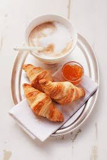
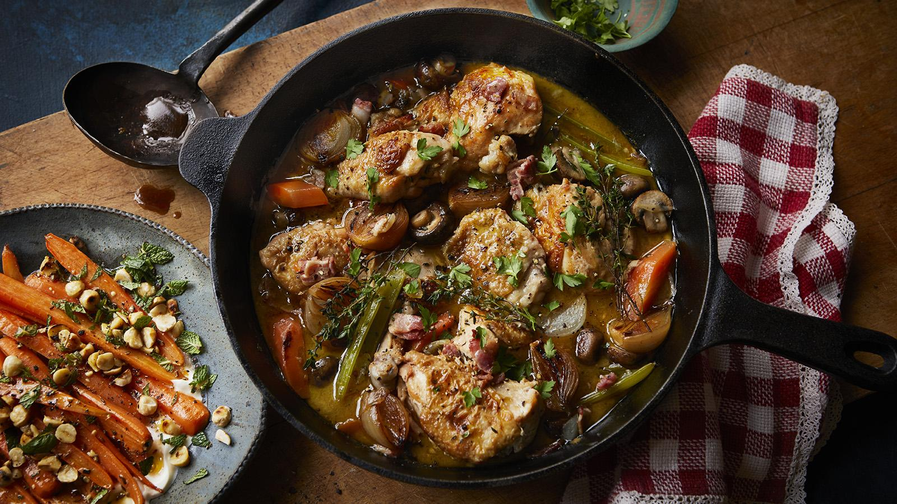
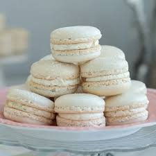
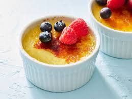

The Art of Dining
French food is celebrated globally for its emphasis on high-quality ingredients, traditional cooking techniques, and the social importance of sharing a meal.
Famous Dishes
- Baguette: A long, thin loaf of bread that serves as a staple of the French diet.
- Croissants: A buttery, flaky pastry that is a popular choice for breakfast.
- Coq au Vin: A classic stew made with chicken, wine, mushrooms, and bacon.


Sweet Treats
France is also famous for its desserts, including delicate macarons and rich, creamy crèmes brûlées.
- Crème Brûlée: A rich custard base topped with a layer of hardened caramelized sugar.
- Macarons: Delicate almond meringue cookies with ganache filling.

